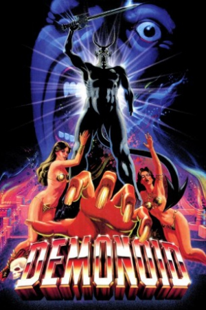
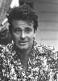

Country:Mexico, 80 minutes
Spoken languages:English, Spanish
Genres:Horror
Director(s):Alfredo Zacarías
Writer(s):Alfredo Zacarías, F. Amos Powell, David Lee Fein
Video Codec:Unknown
Number: 2630


Certification:R
Storyline:
A British woman visits her husband at the Mexican mine he is attempting to reopen and discovers that the workers refuse to enter the mine, fearing an ancient curse. The couple enter the mine to prove there is no danger and inadvertently release a demon which possesses people's left hands and forces them to behave in a suitably diabolical manner.
Cast: 

Medium: Bluray,
Loaned: No
Aspect ratio: Unknown